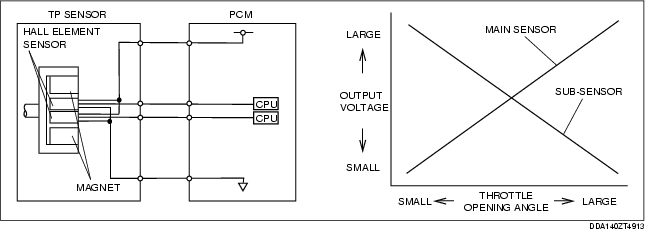

THROTTLE POSITION (TP) SENSOR CONSTRUCTION/OPERATION [ZY]
id0140001740c0
• The sensor is built into the throttle body and detects the throttle valve opening angle.
• The Hall element design has been adopted for the sensor.
• A non contact type sensor has been adopted to improve durability.
• The TP sensor is composed of the main sensor and sub sensor, and detects the throttle valve opening angle with these two sensors (main and sub).
• Even if a malfunction occurs in either one of the sensors, the detection is performed with a normal sensor and drive-by-wire control is maintained.
• If both the MAIN and SUB sensors for the TP sensor malfunction, signals necessary for the drive-by-wire control are not input to the PCM and the drive-by-wire control is disabled.
• However, even though the drive-by-wire control is disabled, the throttle valve opening angle necessary for minimum driving is maintained mechanically.
TP Sensor Voltage Characteristics
